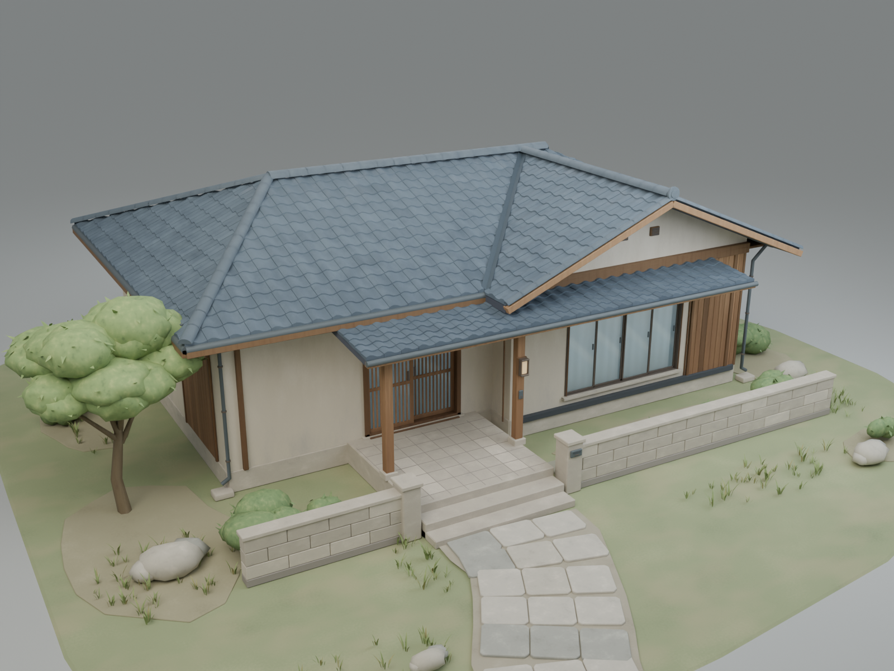
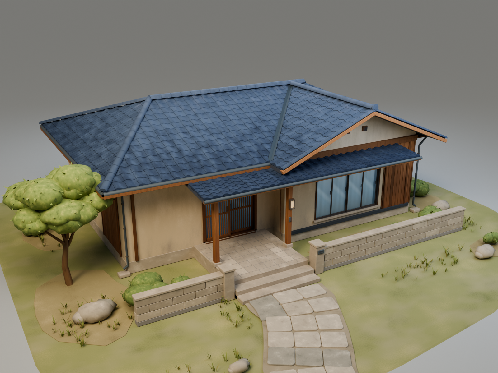
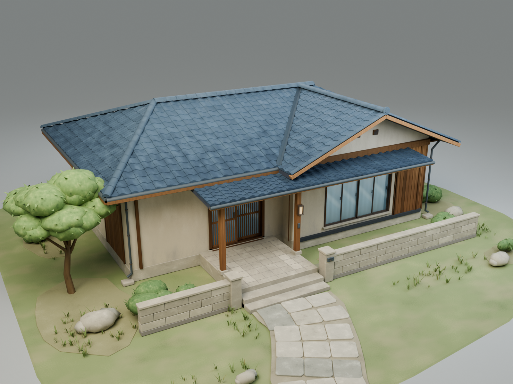
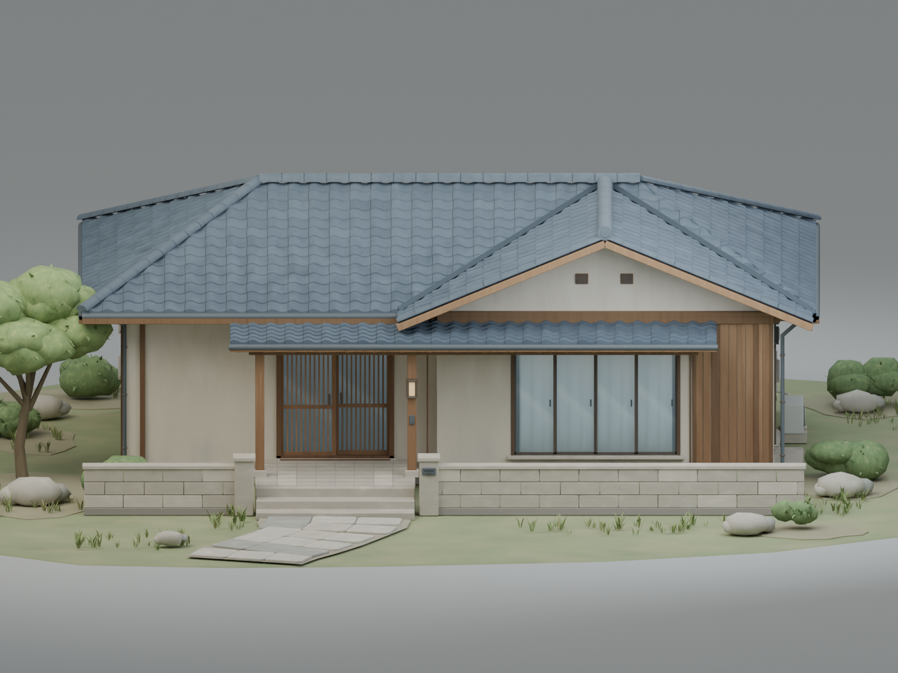
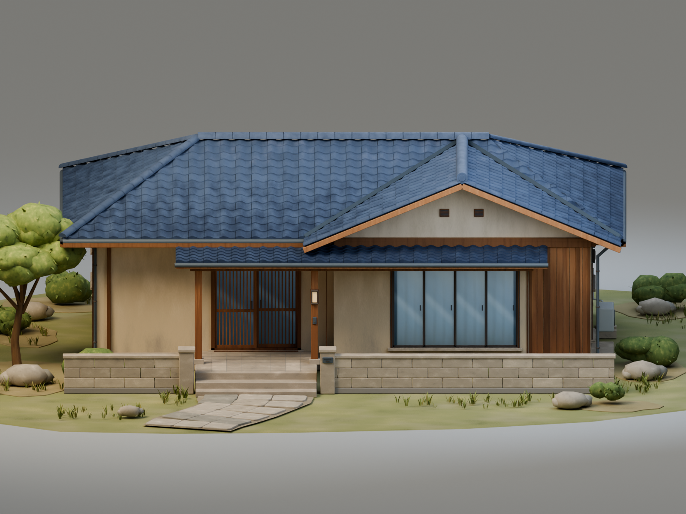
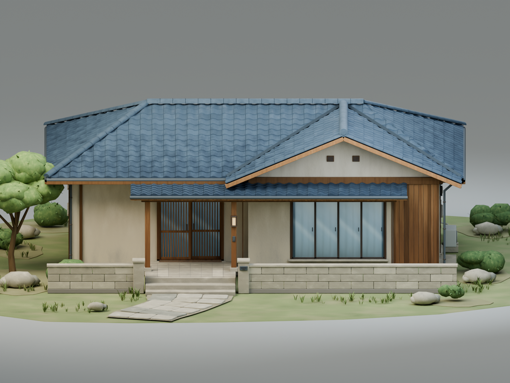
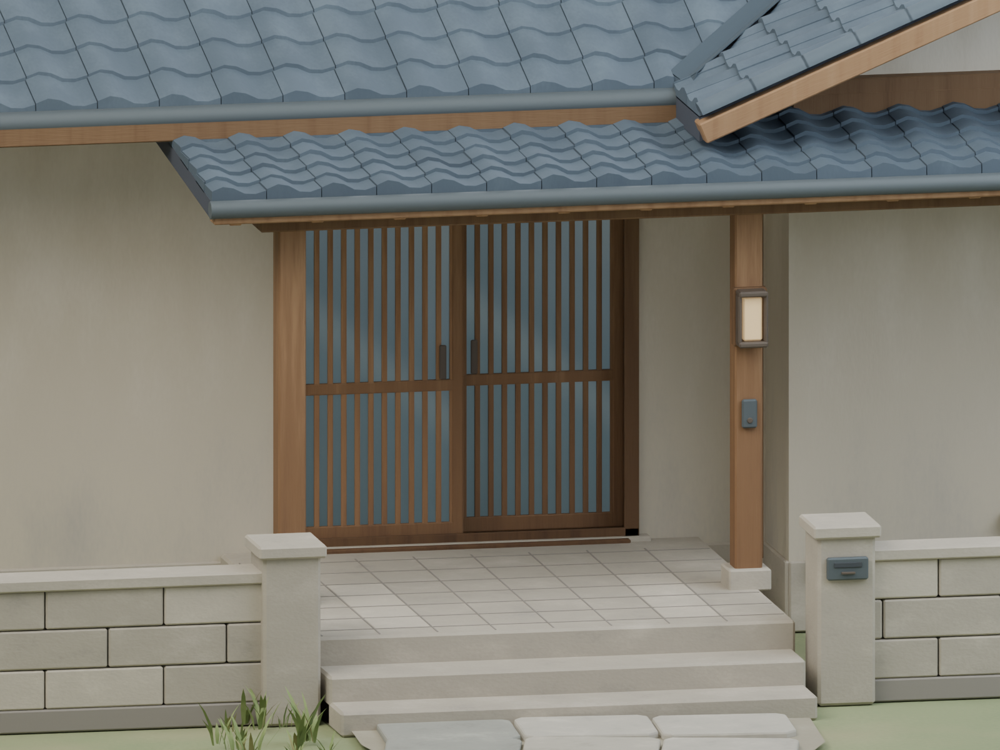
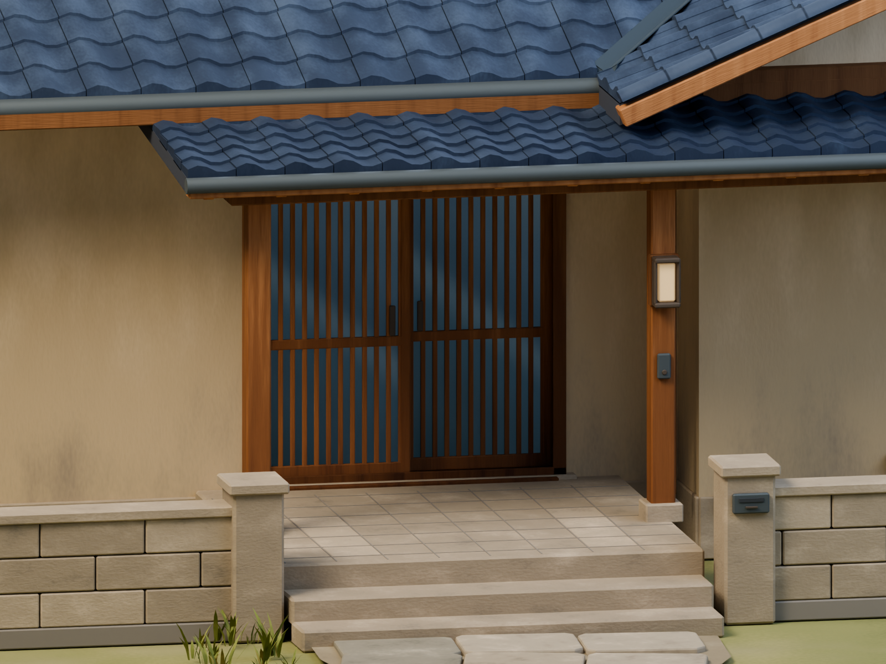
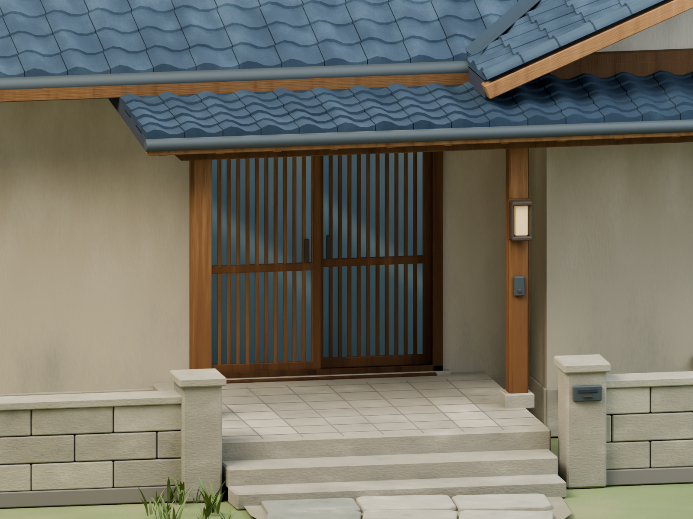

Amagi Mystery · Blender
Тест визуального стиля
Один дом v03, три варианта дневной подачи. Камеры, геометрия и участок одинаковы. Нажмите на изображение, чтобы открыть PNG размером 1600 × 1200.
Одинаковые ракурсы рядом
Общий вид ¾






Передний фасад






Вход и материалы






A · Мягкая аниме-стилизация
Рассеянный дневной свет и плавные переходы цвета. Дерево, камень и черепица читаются за счёт формы и спокойных полутонов.
B · Выразительная иллюстрация
Более тёплые освещённые плоскости, прохладные тени и заметные вариации оттенков черепицы и штукатурки.
C · Графика визуальной новеллы
Мягкий дневной свет с более точными тенями в стыках, ясными границами рам и читаемой фактурой дерева, черепицы и камня.